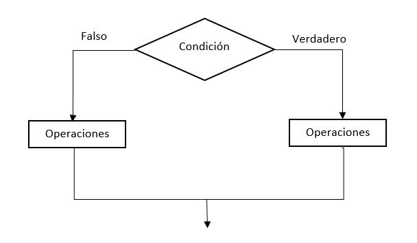

Checkpoint 07
Documentación JavaScript
CONTENIDO
1. ¿Qué diferencia a Javascript de cualquier otro lenguaje de programación?
2. ¿Cuáles son algunos tipos de datos JS?
3. ¿Cuáles son las tres funciones de String en JS?
4. ¿Qué es un condicional?
5. ¿Qué es un operador ternario?
6. ¿Cuál es la diferencia entre una declaración de función y una expresión de función?
7. ¿Qué es la palabra clave "this" en JS?
1. ¿Qué diferencia a Javascript de cualquier otro lenguaje de programación?
JavaScript es un lenguaje de programación básico para la creación de sitios web dinámicos e interactivos. Se usa en navegadores, servidores y aplicaciones para mejorar la experiencia del usuario. Aunque se llama JavaScript, no debe confundirse con Java.
Su principal ventaja es que se ejecuta directamente en el navegador del usuario, sin necesidad de compilar el código previamente.
El flujo de ejecución es la siguiente:
- El navegador carga el código JavaScript en una web
- El motor de JavaScript lo interpreta y ejecuta
- Interactúa con el DOM (Document Object Model), que modifica elementos HTML en tiempo real
- Puede comunicarse con servidores mediante AJAX o Fetch API para obtener y enviar datos sin recargar la página
- Maneja eventos como clics de botones para mejorar la interactividad
Veamos el siguiente ejemplo:
- Pulsa el botón
- Escucha el evento click
- Ejecuta la función
- Cambia el texto del botón
// captura el elemento DOM
const btnStart = document.querySelector('.btn-start');
// captura el evento
btnStart.addEventListener('click', changeText);
// función para cambiar el texto del boton
function changeText() {
btnStart.innerHTML = 'Texto cambiado';
}
Análisis del código:
Revisa lo que hace el código, desde ejemplo.js captura el objeto DOM del ejemplo.html y para ello, hace referencia a la clase "btn-start". Una vez capturado el objeto DOM, lo guarda en una variable llamada btnStart para luego poner en escucha y capturar el evento 'click', para llamar a la función changeText.
Cuando se aprende JavaScript, es esencial entender la relación entre HTML, CSS y JavaScript, y cómo se unen para mostrar un sitio web. Aunque la mayoría de las aplicaciones de JavaScript son del lado del cliente (FRONTEND), este lenguaje también es útil en aplicaciones del lado del servidor (BACKEND), como la creación de servidores web.
Características de JavaScript:
- Multiparadigma: Soporta programación orientada a objetos, funcional e imperativa
- Dinámico y flexible: No requiere declaración explícita de tipos de datos
- Basado en eventos: Responde a interacciones del usuario
- Compatible con todos los navegadores: Funciona en cualquier navegador moderno
- Asíncrono y concurrente: Permite manejar tareas en paralelo con promesas y async/await
Ventajas
- Es fácil de aprender y usar.
- Se ejecuta en el navegador, sin necesidad de compilación
- Amplia compatibilidad con diferentes plataformas
- Ecosistema extenso con miles de librerías y frameworks
- Soporte para desarrollo full-stack con Node.js
Desventajas
- Manejo de errores menos estricto comparado con otros lenguajes
- Uso excesivo puede afectar el rendimiento de una página web
1.1. Sintaxis de JavaScript
JavaScript tiene una serie de normas básicas de sintaxis que debemos seguir.
Variables:
puedes declarar variables usando las palabras clave var, const o let.
letPermite declarar variables limitando su alcance al bloque, fuera de ella no tiene efectoconstSon como laslet, solo que su valor no cambiara a lo largo del programavarPermite declarar variables con alcance dentro y fuera del bloque, se entienden como globales.
IMPORTANTE
No se recomienda el uso de var en Javascript, porque puede dar lugar a problemas y confusiones.
Punto y coma para finalizar sentencias:
En JavaScript, cada instrucción generalmente termina con un ; punto y coma. Es una buena práctica usar el punto y coma siempre. De lo contrario, puede dar errores.
Instrucciones y ejecución secuencial:
En JavaScript, el código está compuesto por instrucciones que se ejecutan de forma secuencial. Esto significa que las instrucciones se ejecutan una tras otra, de arriba hacia abajo, en el orden en que aparecen.
Llaves para delimitar bloques de código:
Las llaves {} en JavaScript se utilizan para definir bloques de código, especialmente en estructuras de control como funciones, bucles o condiciones.
Sensibilidad a mayúsculas y minúsculas:
JavaScript es un lenguaje que diferencia entre mayúsculas y minúsculas (case-sensitive). Esto significa que distingue entre nombre, Nombre y NOMBRE, considerándolos variables diferentes.
Buenas prácticas al nombrar variables:
- Aunque JavaScript no lo exige, es de buena práctica utilizar camelCase para nombrar variables
- Una variable no puede comenzar con un número.
- Un nombre de variable no puede contener espacios.
- No pueden incluir símbolos especiales como (!, @, #, %) a excepción del guion bajo (_) y el símbolo de dólar ($).
Algunas palabras reservadas:
- Control de flujo: if, else, switch, case, default
- Ciclos: for, while, do, break, continue
- Declaración de variables y funciones: var, let, const, function, return
- Manipulación de objetos y clases: class, extends, constructor, super
- Valores especiales: null, undefined, true, false
- Operaciones asincrónicas: async, await
- Operadores de importación/exportación: import, export
- Operadores lógicos y aritméticos: new, delete, typeof, instanceof
PRECAUCIÓN
Estas palabras son utilizadas por el lenguaje para funciones específicas y su uso como nombres provocará errores.
1.2. Comentarios en JavaScript
Su propósito es proporcionar explicaciones o notas para los desarrolladores que leen el código. En JavaScript, los comentarios pueden ser de dos tipos.
- Comentarios de una sola línea
- Comentarios de varias líneas
Comentarios de una sola línea:
Los comentarios de una sola línea comienzan con dos barras inclinadas (//). Todo el texto que sigue a estas barras en la misma línea es considerado un comentario y es ignorado por el intérprete de JavaScript.
// Este es un comentario de una sola línea
let nombre = "Roberto"; // También se puede usar al final de una línea de código
Comentarios de varias líneas:
Los comentarios de varias líneas se encierran entre /* y */. Todo el texto dentro de estos delimitadores es considerado un comentario y es ignorado por el intérprete.
/*
Este es un comentario de varias líneas.
Puede abarcar múltiples líneas.
Es útil para explicaciones más largas o para desactivar bloques de código.
*/
let edad = 36;
1.3. Cómo usar la consola en JavaScript
En JavaScript la consola se usa contínuamente. El método mas utilizado es console.log. Su propósito principal es imprimir información en la consola.
Veamos el siguiente ejemplo:
let mensaje = '¡Hola mundo!';
// varios ejemplos de salida:
console.log(mensaje); // ¡Hola mundo!
console.log(`Este es mi primer ${mensaje}`); // Este es mi primer ¡Hola mundo!
Esto es útil para verificar que las variables contienen los valores esperados y que el flujo de ejecución es el correcto.
1.4. Cómo usar la ventana emergente en JavaScript
En JavaScript la ventana emergente se usa contínuamente. El método mas utilizado es alert. Su propósito principal es imprimir información en la ventana emergente.
Veamos el siguiente ejemplo:
let mensaje = '¡Hola mundo!';
// varios ejemplos de salida:
alert(mensaje) // ¡Hola mundo!
alert(`Este es mi primer ${mensaje}`); // Este es mi primer ¡Hola mundo!
Esto es útil para verificar que las variables contienen los valores esperados y que el flujo de ejecución es el correcto.
1.5. Indentación de código
A medida que escribimos líneas de código en nuestro programa, este se irá complicando y nos tomará más tiempo leer lo que hemos hecho y comprobar si hay errores o buscar como solucionarlos. Sin embargo, para mejorar la rapidez con la que leemos y entendemos el código, una buena práctica es usar la indentación.
A la hora de indentar código hay dos opciones:
- Usar espacios
- Usar tabuladores
Utilizar una u otra estrategia de tabulación depende del programador, pero lo importante es siempre utilizar la misma. En mis ejemplos, suelo utilizar indentación a 4 espacios porque me resulta más práctico leer.
2. ¿Cuáles son algunos tipos de datos JS?
Los tipos de datos en JavaScript son atributos que determinan el tipo de valor que puede contener una variable. Estos tipos de datos son utilizados para representar diferentes tipos de información.
JavaScript es un lenguaje de programación de tipado dinámico, lo que significa que no es necesario declarar explícitamente el tipo de una variable al momento de su creación. Pero eso no significa que JavaScript no tenga tipos. Simplemente el tipo se determina automáticamente cuando se asigna un valor.
2.1. Tipos de datos primitivos
Los tipos de datos primitivos son aquellos que representan valores individuales y no tienen métodos o propiedades. Son inmutables, lo que significa que no se pueden cambiar una vez que se han creado.
- Cadena de texto (string)
- Números (number)
- Booleano (boolean)
- Valor null
- Valor undefined
string:
El tipo de datos string representa una secuencia de caracteres, como texto o palabras. Las cadenas se deben encerrar entre comillas simples ' ' o dobles " ".
number:
El tipo de datos number en JavaScript representa tanto números enteros como de punto flotante.
boolean:
El tipo de datos boolean representa un valor de verdad, que puede ser true (verdadero) o false (falso). Es útil en expresiones condicionales y lógicas.
null:
En JavaScript, null es un valor especial que representa la ausencia intencional de cualquier objeto o valor.
undefined:
El valor undefined indica que una variable ha sido declarada pero aún no se le ha asignado ningún valor.
2.2. Tipos de datos compuestos
Los tipos de datos compuestos en JavaScript son aquellos que pueden contener múltiples valores y tienen métodos y propiedades. Son mutables, lo que significa que pueden cambiar después de su creación.
- Arrays (array)
- Objetos (object)
array:
Los arrays en JavaScript son objetos especiales que permiten almacenar múltiples valores en una sola variable, indexados numéricamente.
object:
Los objetos en JavaScript son colecciones de pares clave-valor, donde la clave es una cadena (o símbolo) y el valor puede ser cualquier tipo de dato, incluidos otros objetos.
3. ¿Cuáles son las tres funciones de String en JS?
JavaScript ofrece numerosas funciones predefinidas que facilitan el trabajo con cadenas de texto (string). Entre las posibilidades que ofrecen estas funciones tenemos el replace(), toLowerCase(), toUpperCase(), etc.
replace():
El método .replace acepta dos argumentos: la cadena que se reemplazará y con qué se reemplazará la cadena. Las cadenas en JavaScript son inmutables, el método replace() no cambia el valor de la cadena especificada, nos devuelve un nuevo valor.
let nombre = 'Roberto@gmail.com';
let resultado = nombre.replace('@gmail.com', '');
console.log(resultado); // Salida: Roberto
console.log(nombre); // Salida: Roberto@gmail.com
toLowerCase():
Las cadenas en JavaScript son inmutables, el método toLowerCase() no cambia el valor de la cadena especificada, nos devuelve un nuevo valor.
let nombre = 'Roberto';
let resultado = nombre.toLowerCase();
console.log(resultado); // Salida: roberto
console.log(nombre); // Salida: Roberto
toUpperCase():
Las cadenas en JavaScript son inmutables, el método toUpperCase() no cambia el valor de la cadena especificada, nos devuelve un nuevo valor.
let nombre = 'Roberto';
let resultado = nombre.toUpperCase();
console.log(resultado); // Salida: ROBERTO
console.log(nombre); // Salida: Roberto
4. ¿Qué es un condicional?
Hasta ahora, hemos visto cómo resolver los problemas más sencillos pero no podemos resolver todo utilizando estructuras secuenciales. Cuando tenemos que tomar una decisión aparecen las estructuras condicionales. Por ejemplo, en nuestra vida diaria hay momentos donde tenemos que decidir entre un pantalón u otro, un camino u otro. En estos casos es común resolver un problema combinando estructuras secuenciales y condicionales.
JavaScript cuenta con 4 tipos de condicionales:
- Condicional if
- Condicional else
- Condicional else if
- Condicional switch
4.1. Condicional simple con if
Podemos ver un ejemplo de una estructura condicional simple con el siguiente esquema.
IMPORTANTE
Puedes usar if solo una vez por bloque y no es obligatorio complementarlo con else.

Podemos observar en el esquema que el rombo representa la condición y tenemos dos opciones que podemos tomar. Si la condición devuelve un resultado verdadero, ejecutará las opciones que se encuentren en su interior, si por el contrario es falso, no realizará dicha acción.
Vamos a ver el primer ejemplo y el mas simple con el if, le pasamos por variable edad = 20, si tiene 18 o mas años, muestra un mensaje Soy mayor de edad porque tengo 18 o mas años. y si tiene menos de 18 años, no nos muestra ningun mensaje.
let edad = 20;
if (edad >= 18) {
console.log(`Soy mayor de edad porque tengo ${edad} o mas años.`)
}
La palabra clave if implica el inicio de una condición, seguidamente incluimos la condición entre () paréntesis y finalizamos la línea con el carácter { apertura de llave.
Una de las características de JavaScript que además ayuda a tener una estructura organizada es la indentación o sangrado de texto con dos o cuatro espacios. Es decir, si queremos incluir una condición, el texto que deba ir en su interior debe ir con cuatro espacios con respecto al inicio de la palabra if.
4.2. Condicional alternativa con if else
Podemos ver un ejemplo de una estructura condicional compuesta con el siguiente esquema.
IMPORTANTE
Puedes usar else solo una vez por condición if.

Cuando se presenta una elección entre if o else, tenemos la opción de realizar una acción u otra, es decir, tenemos operaciones diferentes a ejecutar si la condición es verdadera o es falsa. Es decir, se tomara una de las 2 elecciones de la bifurcación.
Vamos a volver a realizar el ejercicio anterior pero, con la diferencia, de que si la edad es menor a 18 años, nos muestre un mensaje Soy menor de edad porque tengo menos de 18 años..
edad = 16;
if (edad >= 18) {
console.log(`Soy mayor de edad porque tengo ${edad} o mas años.`)
}
else {
console.log(`Soy menor de edad porque tengo menos de ${edad} años.`);
}
Como podemos ver, si la condición es falsa, y queremos que realice una operación, la forma sería incluyendo la palabra else en una línea nueva seguida del carácter { apertura de llave. Después las operaciones necesarias que queramos ejecutar separadas con 4 espacios con respecto a la línea de la palabra else. Despues de la operación y en una nueva línea, toca cerrar } la llave y con eso, finaliza el bloque else.
4.3. Condicional encadenada con if else if else
Podemos ver un ejemplo de una estructura condicional encadenada con el siguiente esquema.
IMPORTANTE
El flujo de ejecucción se prioriza siempre de arriba hacia abajo y puedes crear tantas else if que desees.

Cuando se presentan mas de dos elecciónes a elegir entre if else if y else, se tomara como válida, solamente una de las 3 elecciones de la bifurcación. El flujo de ejecución se priorizara siempre de arriba hacia abajo.
Vamos a volver a realizar el ejercicio anterior con una condiciónal mas, que sera la condicional else if, pero con la diferencia, de que si la edad es mayor o igual a 67 años, nos muestre un mensaje Tengo 70 años y estoy jubilado.. El resto de las condicionales se mantienen igual.
let edad = 36;
if (edad >= 67) {
console.log(`Tengo ${edad} años y estoy jubilado.`);
}
else if (edad >= 18) {
console.log(`Soy mayor de edad porque tengo ${edad} o mas años.`)
}
else {
console.log(`Soy menor de edad porque tengo menos de ${edad} años.`);
}
Como vemos en el ejempo anterior, el uso de la condicional else if, nos da la posibilidad de crear muchas condiciones sobre un mismo if ya que su uso no esta limitado. Recuerda que cuanto mas corto y menos condicionales tenga el bloque, mas legible sera el código.
4.4. Condicionales anidadas
Podemos ver un ejemplo de una estructura condicional anidado con el siguiente esquema.
IMPORTANTE
Podemos tener infinidad de condiciones anidadas pero en la medida de lo posible, procuraremos anidar lo menos posible.

4.5. Condicional switch
La estructura de control switch permite definir casos específicos a realizar cuando la variable expuesta como condición sea igual a los valores que se especifican a continuación mediante cada case:.
Las sentencias switch no serán apropiadas para usar en todas las situaciones. Pero si sientes que las sentencias else if son largas y complicadas, entonces una sentencia switch podría ser una opción alternativa. Aunque, mucha gente opina que en lugar de mejorar la legibilidad, normalmente la empeora.
Veamos un ejemplo de cómo se utiliza:
let numero = 88734;
switch (numero) {
case 00003:
console.log('¡Primer premio!');
break;
case 00012:
console.log('¡Segundo premio!');
break;
case 88734:
console.log('¡Tercer premio!');
break;
// con default, toma la salida de cualquier otra opción
default:
console.log(`El número ${numero} no tiene premio`);
break;
}
El valor de la variable (numero) es 88734, toma la salida (case 88734) con el mensaje ¡Tercer premio!
- switch: Se define el tipo de condición que debe cumplir, en este caso, compara el valor de la variable con la opción.
- case 00003: Es la primera opción, si cumple la condición, toma la salida y sale con el break, si no cumple, continua
- case 00012: Es la segunda opción, si cumple la condición, toma la salida y sale con el break, si no cumple, continua
- case 88734: Es la tercera opcion, si cumple la condición, toma la salida y sale con el break, si no cumple, continua
- default: Si no cumple con ninguna condicion anterior, toma la salida con el mensaje (
El número (?) no tiene premio) y sale con el break
5. ¿Qué es un operador ternario?
El operador ternario es una forma abreviada de la estructura if...else y es útil cuando queremos tomar decisiones basadas en una condición.
Se compone de tres partes:
- Una expresión condicional
- Una expresión que se evalúa si la condición es verdadera
- Una expresión que se evalúa si la condición es falsa
La sintaxis básica del operador ternario es la siguiente:
- condicion: Una expresión que se evalúa como verdadera o falsa
- expresion_verdadera: La expresión que se ejecutará si condicion es verdadera
- expresion_falsa: La expresión que se ejecutará si condicion es falsa
const edad = 36;
const mensaje = edad >= 18 ? 'Eres mayor de edad' : 'Eres menor de edad';
console.log(mensaje); // Salida: Eres mayor de edad
5.1. Anidamiento de operadores ternarios
Es posible anidar operadores ternarios para expresiones condicionales más complejas. Los operadores ternarios encadenados (o anidados) hacen que el código sea imposible de leer en algunos casos. Lo ideal seria usar switch/case o if/else en su lugar.
Veamos un ejemplo:
const calificacion = 8;
const resultado = calificacion < 5 ? 'Suspenso' :
calificacion < 7 ? 'Aprobado' :
calificacion < 9 ? 'Notable' :
calificacion < 10 ? 'sobresaliente' :
calificacion == 10 ? 'Matrícula de honor' :
'Introduzca un número del 0 al 10';
console.log(resultado); // Salida: Notable
IMPORTANTE
Es importante mantener la legibilidad del código al hacerlo.
6. ¿Cuál es la diferencia entre una declaración de función y una expresión de función?
JavaScript al ser un lenguaje dinámico, tiene ciertos mecanismos para garantizar que la ejecución de nuestro código sea la más óptima y correcta.
Tenemos dos maneras principales de definir funciones:
- Podemos definir una función declarando
- Podemos definir una función como una expresión
Veamos un ejemplo para compararlos:
// Declaracion de funcion
function saludar() {
console.log('Hola');
}
// Expresion de funcion
let saludar = function() {
console.log('Hola');
};
🕵️ Analicemos las diferencias
Declaración de función:
- Sólo es visible dentro del bloque de código en el que reside, por ejemplo dentro de un
if - JavaScript precarga todas las funciones declaradas al inicio y puede llamarse antes o despues de la función
Expresión de función:
- Es visible dentro y fuera del bloque de código en el que reside pudiendo declarar una variable fuera del bloque
- Se define dentro de una variable como una expresión normal, por eso lleva
;punto y coma al final de la función - Solo puede llamarse despues de la función, si se llama antes de la función tira error de (variable no está definida)
Las diferencias de sintaxis son claras.
Veamos el mismo ejemplo anterior, agregando una llamada antes de la función:
// Declaracion de funcion
saludar() // Salida: Hola
function saludar() {
console.log('Hola');
}
// Expresion de funcion
saludar(); // Error: saludar no está definida
let saludar = function() {
console.log('Hola');
};
En el caso de expresión de función nos da el error de (variable no está definida), cosa que en la declaración de función no ocurre gracias a la precarga de las declaraciones al inicio.
IMPORTANTE
En las expresiones de funciones darle nombre a la función es opcional. En cambio para las declaraciones es obligatorio.
No hay una forma mejor o peor de declarar funciones, lo bueno es conocer las herramientas que tenemos, sus implicaciones y saber cuando podemos usarlas para crear código legible y limpio.
Veamos un ejemplo mas completo:
// Expresion de funcion
let edad = 32;
let entradaCasino;
if (edad >= 18) {
entradaCasino = function() {
console.log('Puedes entrar al casino');
};
}
else {
entradaCasino = function() {
console.log('No puedes entrar al casino');
};
}
entradaCasino(); // Salida: Puedes entrar al casino
Con la expresion de funcion, podemos llamar a cualquier función este donde este. Gracias a la variable entradaCasino, nos permite ver la función anónima dentro del bloque if desde el exterior.
7. ¿Qué es la palabra clave "this" en JS?
Una de las características de JavaScript que más confusión genera es la palabra clave this. Más concretamente a qué o quién hace referencia y en qué circunstancias.
this es una palabra clave que se utiliza mucho dentro de las clases para hacer referencia al objeto instanciado. Cuando se crea una función dentro de una clase, esta función pasa a llamarse método. El primer método siempre sera el constructor, se encarga de declarar atributos, el this hace referencia a cualquier atributo que se le pase dentro de esa misma clase. si se utilizara fuera de ésta clase, aría referencia a otra cosa.
Veamos un ejemplo de clase:
class Cliente {
provincia = 'Guipuzcoa'; // atributo global / variable de clase
constructor(nombre, apellido, telefono) {
this.nombre = nombre;
this.apellido = apellido;
this.telefono = telefono;
}
datos() {
return 'Nombre: ' + this.nombre + '\n' +
'Apellido: ' + this.apellido + '\n' +
'Teléfono: ' + this.telefono + '\n' +
'Provincia: ' + this.provincia;
}
}
const cli_1 = new Cliente('Nerea', 'Zelaieta', '666-666-666');
const cli_2 = new Cliente('Roberto', 'Mendiburu', '333-666-666');
console.log(cli_1.datos());
console.log(cli_2.datos());
/*
Salida: Nombre: Nerea
Apellido: Zelaieta
Teléfono: 666-666-666
Provincia: Guipuzcoa
Nombre: Roberto
Apellido: Mendiburu
Teléfono: 333-666-666
Provincia: Guipuzcoa
*/
Veamos un ejemplo de objeto:
const usuario = {
nombre: 'Roberto',
apellido: 'Mendiburu',
telefono: '333-666-666',
mostrar() {
console.log(this);
}
};
usuario.mostrar();
/*
Salida: Nombre: Roberto
Apellido: Mendiburu
Teléfono: 333-666-666
mostrar: [Function: mostrar]
*/
Cuando se crea una función dentro de un objeto, esta función pasa a llamarse método. El this hace referencia al objeto que lo envuelve. La ejecución de este código nos imprime el objeto completo que el this hace referencia.
Veamos un ejemplo simple:
function usuario() {
console.log(this);
}
console.log(usuario()); // Object [global]
/*
Salida: Object [global]
*/
Hace referencia al objeto global.